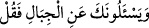

Dünyada tepeler haricinde 6673 dağ vardır.
“Sana dağlar hakkında sorarlar.” ifadesi, dağların âkıbetinin ne olacağını sorarlar
demektir. Bu soruyu Sakif kabîlesinden bir adam sormuş ve: “Ey Allâh’ın Rasûlü,
kıyamet gününde dağlara ne olacak?” demişti.
Soranları hemen ilzam etmek üzere “De ki: “Rabbim onları ufalayıp savuracak.”
Yâni kökünden sökecek savrulmuş toz gibi kılacak. el-İrşâd’da der ki: “Dağları kum
taneleri haline getirecek, sonra onların üzerine rüzgar gönderecek, onları dağıtacak ve
savuracak.”
Tefsîr-i Kebîr’de ise şöyle der: “Herhalde birileri Hz. Peygamber (s.a.)’e: “Sen
dünyanın fenâ bulacağını iddiâ ediyorsun. Bu dediğin doğru olsaydı onun yok olmaya
dûçar olması için eksilmeye başlaması gerekirdi. Fakat biz dünyada öyle noksanlaşma
göremiyoruz. Dağları oldukları gibi yerinde görüyoruz.” dediler. Bu, göklerin yok
olmayacağı konusunda Calinos’un ortaya attığı şüphedir. Bu şüpheye vereceğimiz cevap
şudur: “Bir şeyin yok oluşu bazen zayıflayarak başlar. Yok oluştan önce bunun belirtileri
olan eksiklik ortaya çıkar. Ancak bu yok oluş, bazen de hiçbir noksanlaşma alâmeti
olmaksızın bir defada olur. Sağlam duran bir şey, ânîden yok olabilir. Açıkça ortaya
çıktı ki Allah Teâlâ, cismânî âlemin terkiplerini kudreti meşîeti ile bir defada yok eder.”
Bunun misâli, dünya dağları ve bütün azameti ile güçlü kuvvetli bir genç gibidir. Kimi
gençler hiçbir hastalık ve zayıflama belirtisi olmadan, ânîden ölüverir.
Gördün mü ey Hâfız, kekliğin salınarak yürüyüşünü,
Kendisini kazâ şâhininin pençesinden gâfil kıldı.
el-Es’iletü’l-Mukhime’de der ki: “Burada Allah:
buyurdu. Başka bir yerde ise ‘fe’ harfi olmadan
“Sana öksüzlerden soruyorlar; De ki; Onları(n durumlarını) düzeltmek
hayırlıdır.” (el-Bakara, 2/220) buyurdu. Bunun cevabı şöyledir: Tefsir edilen âyette
soru henüz sorulmuş değildi. Bu ifâde, “Sana dağlardan sorarlarsa, de ki:” demektir.
Benzer durum şu âyetlerde de vardır:
(“fe” ile gelen) açıklamalar vardır. (Bk. el-Bakara 2/24, Yunus 10/94, el-Bakara
2/137) Ancak;
“Sana öksüzlerden soruyorlar” (el-Bakara, 2/220) âyetinde durum böyle değildir.
Çünkü orada bu konuyu daha önce sormuşlardı.